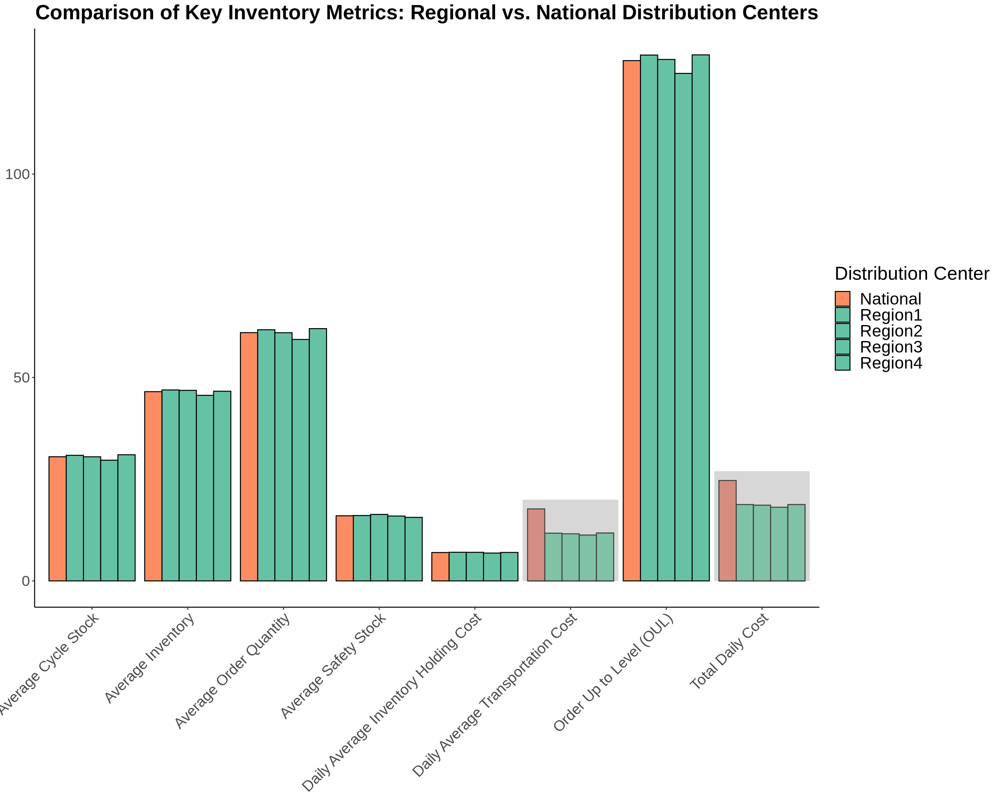

product2 <- read_excel("Homework3_data.xlsx",
sheet = "Product2")Product 2
Data
Load the data into the enviorment
product2 %>%
head(10) %>%
knitr::kable(digits = 2)| Region1 | Region2 | Region3 | Region4 |
|---|---|---|---|
| 9.67 | 5.64 | 8.74 | 10.90 |
| 10.73 | 10.53 | 14.25 | 18.67 |
| 12.36 | 10.12 | 8.64 | 9.43 |
| 13.71 | 12.60 | 10.24 | 7.07 |
| 7.27 | 14.27 | 6.57 | 10.88 |
| 9.87 | 10.54 | 11.47 | 12.11 |
| 4.48 | 11.21 | 12.14 | 11.92 |
| 12.54 | 2.44 | 5.35 | 5.03 |
| 13.56 | 11.49 | 13.60 | 9.76 |
| 11.60 | 11.31 | 12.31 | 15.02 |
Explanation of the Data:
Columns:
- Region1: Daily demand for Product 2 in Regional Distribution Center 1.
- Region2: Daily demand for Product 2 in Regional Distribution Center 2.
- Region3: Daily demand for Product 2 in Regional Distribution Center 3.
- Region4: Daily demand for Product 2 in Regional Distribution Center 4.
Rows:
- Each row represents a specific day in the year. For example, the first row shows the demand on day 1, the second row on day 2, and so on.
Periodic Review Policy:
- Review Interval: 6 days
- Lead Time: 5 days
- Cycle Service Level: 95%
Cost Parameters:
- Unit Holding Cost: $0.15 per unit per day
- Inbound Transportation Cost (Regional): $0.09 per unit
- Outbound Transportation Cost (Regional): $0.10 per unit
- Inbound Transportation Cost (National): $0.05 per unit
- Outbound Transportation Cost (National): $0.24 per unit
Now we are going to calculate the metrics
1) OUL (Order Up to Level)
1. Calculate the Average Daily Demand (D) for Each Region:
\[ D = \frac{\sum_{i=1}^{n} \text{Demand}_i}{n} \]
# Calculate average daily demand (D) for each region
D_region1 <- mean(product2$Region1)
D_region2 <- mean(product2$Region2)
D_region3 <- mean(product2$Region3)
D_region4 <- mean(product2$Region4)
D_values <- data.frame(
Region = c("Region1", "Region2", "Region3", "Region4"),
Average_Daily_Demand = c(D_region1, D_region2, D_region3, D_region4)
)
D_values Region Average_Daily_Demand
1 Region1 10.289044
2 Region2 10.167527
3 Region3 9.891387
4 Region4 10.3354392. Determine the Standard Deviation of Daily Demand (σ) for Each Region:
\[ \sigma = \sqrt{\frac{\sum_{i=1}^{n} (\text{Demand}_i - D)^2}{n-1}} \]
# Calculate standard deviation of daily demand (σ) for each region
sigma_region1 <- sd(product2$Region1)
sigma_region2 <- sd(product2$Region2)
sigma_region3 <- sd(product2$Region3)
sigma_region4 <- sd(product2$Region4)
sigma_values <- data.frame(
Region = c("Region1", "Region2", "Region3", "Region4"),
Standard_Deviation = c(sigma_region1, sigma_region2, sigma_region3, sigma_region4)
)
sigma_values Region Standard_Deviation
1 Region1 2.945669
2 Region2 2.994597
3 Region3 2.922232
4 Region4 2.8624803. Calculate the Demand During Lead Time Plus Review Period (L+R):
\[ L = 5 \text{ days (Lead Time)} \]
\[ R = 6 \text{ days (Review Interval)} \]
\[ D_{L+R} = D \times (L + R) \]
# Constants
L <- 5 # Lead time in days
R <- 6 # Review interval in days
# Calculate demand during lead time plus review period (D_{L+R}) for each region
D_L_R_region1 <- D_region1 * (L + R)
D_L_R_region2 <- D_region2 * (L + R)
D_L_R_region3 <- D_region3 * (L + R)
D_L_R_region4 <- D_region4 * (L + R)
D_L_R_values <- data.frame(
Region = c("Region1", "Region2", "Region3", "Region4"),
Demand_During_L_R = c(D_L_R_region1, D_L_R_region2, D_L_R_region3, D_L_R_region4)
)
D_L_R_values Region Demand_During_L_R
1 Region1 113.1795
2 Region2 111.8428
3 Region3 108.8053
4 Region4 113.68984. Calculate the Safety Stock:
- For a 95% service level, the Z-score is approximately 1.65.
\[ \text{Safety Stock} = Z \times \sigma \times \sqrt{L + R} \]
# Calculate the Z-score for a 95% service level
Z <- qnorm(0.95)
# Calculate safety stock for each region
safety_stock_region1 <- Z * sigma_region1 * sqrt(L + R)
safety_stock_region2 <- Z * sigma_region2 * sqrt(L + R)
safety_stock_region3 <- Z * sigma_region3 * sqrt(L + R)
safety_stock_region4 <- Z * sigma_region4 * sqrt(L + R)
safety_stock_values <- data.frame(
Region = c("Region1", "Region2", "Region3", "Region4"),
Safety_Stock = c(safety_stock_region1, safety_stock_region2, safety_stock_region3, safety_stock_region4)
)
safety_stock_values Region Safety_Stock
1 Region1 16.06969
2 Region2 16.33661
3 Region3 15.94183
4 Region4 15.615875. Combine These to Find the Order Up to Level (OUL):
\[ \text{OUL} = D_{L+R} + \text{Safety Stock} \]
# Calculate Order Up to Level (OUL) for each region
OUL_region1 <- D_L_R_region1 + safety_stock_region1
OUL_region2 <- D_L_R_region2 + safety_stock_region2
OUL_region3 <- D_L_R_region3 + safety_stock_region3
OUL_region4 <- D_L_R_region4 + safety_stock_region4
OUL_values <- data.frame(
Region = c("Region1", "Region2", "Region3", "Region4"),
OUL = c(OUL_region1, OUL_region2, OUL_region3, OUL_region4)
)
OUL_values %>%
knitr::kable()| Region | OUL |
|---|---|
| Region1 | 129.2492 |
| Region2 | 128.1794 |
| Region3 | 124.7471 |
| Region4 | 129.3057 |
2) Average Order Quantity
\[ Average Order Quantity=D×R \]
# Calculate the average order quantity for each region
average_order_quantity_region1 <- D_region1 * R
average_order_quantity_region2 <- D_region2 * R
average_order_quantity_region3 <- D_region3 * R
average_order_quantity_region4 <- D_region4 * R
average_order_quantity_values <- data.frame(
Region = c("Region1", "Region2", "Region3", "Region4"),
Average_Order_Quantity = c(average_order_quantity_region1, average_order_quantity_region2, average_order_quantity_region3, average_order_quantity_region4)
)
average_order_quantity_values %>%
knitr::kable()| Region | Average_Order_Quantity |
|---|---|
| Region1 | 61.73427 |
| Region2 | 61.00516 |
| Region3 | 59.34832 |
| Region4 | 62.01264 |
3) Calculate the Average Cycle Stock
\[ \text{Average Cycle Stock} = \frac{\text{Average Order Quantity}}{2} \]
# Calculate the average cycle stock for each region
average_cycle_stock_region1 <- average_order_quantity_region1 / 2
average_cycle_stock_region2 <- average_order_quantity_region2 / 2
average_cycle_stock_region3 <- average_order_quantity_region3 / 2
average_cycle_stock_region4 <- average_order_quantity_region4 / 2
average_cycle_stock_values <- data.frame(
Region = c("Region1", "Region2", "Region3", "Region4"),
Average_Cycle_Stock = c(average_cycle_stock_region1, average_cycle_stock_region2, average_cycle_stock_region3, average_cycle_stock_region4)
)
average_cycle_stock_values %>%
knitr::kable()| Region | Average_Cycle_Stock |
|---|---|
| Region1 | 30.86713 |
| Region2 | 30.50258 |
| Region3 | 29.67416 |
| Region4 | 31.00632 |
4) Calculate the Average Inventory
\[ \text{Average Inventory} = \text{Average Cycle Stock} + \text{Safety Stock} \]
# Calculate the average inventory for each region
average_inventory_region1 <- average_cycle_stock_region1 + safety_stock_region1
average_inventory_region2 <- average_cycle_stock_region2 + safety_stock_region2
average_inventory_region3 <- average_cycle_stock_region3 + safety_stock_region3
average_inventory_region4 <- average_cycle_stock_region4 + safety_stock_region4
average_inventory_values <- data.frame(
Region = c("Region1", "Region2", "Region3", "Region4"),
Average_Inventory = c(average_inventory_region1, average_inventory_region2, average_inventory_region3, average_inventory_region4)
)
average_inventory_values %>%
knitr::kable()| Region | Average_Inventory |
|---|---|
| Region1 | 46.93682 |
| Region2 | 46.83920 |
| Region3 | 45.61599 |
| Region4 | 46.62218 |
5) Calculate the Daily average inventory holding cost
\[ \text{Daily Average Inventory Holding Cost} = \text{Average Inventory} \times \text{Holding Cost per Unit per Day} \]
# Holding cost per unit per day
holding_cost_per_unit_per_day <- 0.15
# Calculate the daily average inventory holding cost for each region
daily_average_inventory_holding_cost_region1 <- average_inventory_region1 * holding_cost_per_unit_per_day
daily_average_inventory_holding_cost_region2 <- average_inventory_region2 * holding_cost_per_unit_per_day
daily_average_inventory_holding_cost_region3 <- average_inventory_region3 * holding_cost_per_unit_per_day
daily_average_inventory_holding_cost_region4 <- average_inventory_region4 * holding_cost_per_unit_per_day
daily_average_inventory_holding_cost_values <- data.frame(
Region = c("Region1", "Region2", "Region3", "Region4"),
Daily_Average_Inventory_Holding_Cost = c(daily_average_inventory_holding_cost_region1, daily_average_inventory_holding_cost_region2, daily_average_inventory_holding_cost_region3, daily_average_inventory_holding_cost_region4)
)
daily_average_inventory_holding_cost_values %>%
knitr::kable()| Region | Daily_Average_Inventory_Holding_Cost |
|---|---|
| Region1 | 7.040524 |
| Region2 | 7.025879 |
| Region3 | 6.842399 |
| Region4 | 6.993328 |
6) Calculate the Daily Average Transportation Cost
\[ \text{Daily Average Transportation Cost} = \text{Average Order Quantity} \times (\text{Inbound Cost} + \text{Outbound Cost}) \]
# Transportation costs
inbound_cost <- 0.09
outbound_cost <- 0.10
# Calculate the daily average transportation cost for each region
daily_average_transportation_cost_region1 <- average_order_quantity_region1 * (inbound_cost + outbound_cost)
daily_average_transportation_cost_region2 <- average_order_quantity_region2 * (inbound_cost + outbound_cost)
daily_average_transportation_cost_region3 <- average_order_quantity_region3 * (inbound_cost + outbound_cost)
daily_average_transportation_cost_region4 <- average_order_quantity_region4 * (inbound_cost + outbound_cost)
daily_average_transportation_cost_values <- data.frame(
Region = c("Region1", "Region2", "Region3", "Region4"),
Daily_Average_Transportation_Cost = c(daily_average_transportation_cost_region1, daily_average_transportation_cost_region2, daily_average_transportation_cost_region3, daily_average_transportation_cost_region4)
)
daily_average_transportation_cost_values %>%
knitr::kable()| Region | Daily_Average_Transportation_Cost |
|---|---|
| Region1 | 11.72951 |
| Region2 | 11.59098 |
| Region3 | 11.27618 |
| Region4 | 11.78240 |
7) Calculate the Total Daily Cost
\[ \text{Total Daily Cost} = \text{Daily Average Inventory Holding Cost} + \text{Daily Average Transportation Cost} \]
# Calculate the total daily cost for each region
total_daily_cost_region1 <- daily_average_inventory_holding_cost_region1 + daily_average_transportation_cost_region1
total_daily_cost_region2 <- daily_average_inventory_holding_cost_region2 + daily_average_transportation_cost_region2
total_daily_cost_region3 <- daily_average_inventory_holding_cost_region3 + daily_average_transportation_cost_region3
total_daily_cost_region4 <- daily_average_inventory_holding_cost_region4 + daily_average_transportation_cost_region4
# Create a data frame to store the results
total_daily_cost_values <- data.frame(
Region = c("Region1", "Region2", "Region3", "Region4"),
Total_Daily_Cost = c(total_daily_cost_region1, total_daily_cost_region2, total_daily_cost_region3, total_daily_cost_region4)
)
total_daily_cost_values %>%
knitr::kable()| Region | Total_Daily_Cost |
|---|---|
| Region1 | 18.77003 |
| Region2 | 18.61686 |
| Region3 | 18.11858 |
| Region4 | 18.77573 |
Based on these calculations from the data, the goal of this project includes a comparative evaluation between the regional distribution centers and a hypothetical national distribution center to determine the most cost-effective distribution strategy. The ultimate goal is to identify potential cost savings and provide recommendations on whether to maintain regional centers or consolidate into a national distribution center.
To achieve this, we will take the following steps:
- Calculate and compare key inventory metrics for regional and national distribution centers.
- Assess the total daily costs associated with each distribution strategy.
- Provide recommendations based on the cost-effectiveness of regional versus national distribution centers.
we need to calculate these metrics for the hypothetical national distribution center.
The transportation costs for the regional distribution center are: - Inbound transportation cost: $0.09 per unit - Outbound transportation cost: $0.10 per unit
The transportation costs for the national distribution center are: - Inbound transportation cost: $0.05 per unit - Outbound transportation cost: $0.24 per unit
Regional Distribution Centers
# Constants for regional distribution centers
L <- 5 # Lead time in days
R <- 6 # Review interval in days
Z <- qnorm(0.95) # Z-score for 95% service level
holding_cost_per_unit_per_day <- 0.15
inbound_cost_regional <- 0.09
outbound_cost_regional <- 0.10
# Calculate average daily demand (D) and standard deviation (sigma) for each region
D_region1 <- mean(product2$Region1)
D_region2 <- mean(product2$Region2)
D_region3 <- mean(product2$Region3)
D_region4 <- mean(product2$Region4)
sigma_region1 <- sd(product2$Region1)
sigma_region2 <- sd(product2$Region2)
sigma_region3 <- sd(product2$Region3)
sigma_region4 <- sd(product2$Region4)
# Calculate metrics for each region
calculate_metrics <- function(D, sigma) {
D_L_R <- D * (L + R)
safety_stock <- Z * sigma * sqrt(L + R)
OUL <- D_L_R + safety_stock
average_order_quantity <- D * R
average_cycle_stock <- average_order_quantity / 2
average_inventory <- average_cycle_stock + safety_stock
daily_average_inventory_holding_cost <- average_inventory * holding_cost_per_unit_per_day
daily_average_transportation_cost <- average_order_quantity * (inbound_cost_regional + outbound_cost_regional)
total_daily_cost <- daily_average_inventory_holding_cost + daily_average_transportation_cost
return(c(OUL, average_order_quantity, average_cycle_stock, safety_stock, average_inventory,
daily_average_inventory_holding_cost, daily_average_transportation_cost, total_daily_cost))
}
metrics_region1 <- calculate_metrics(D_region1, sigma_region1)
metrics_region2 <- calculate_metrics(D_region2, sigma_region2)
metrics_region3 <- calculate_metrics(D_region3, sigma_region3)
metrics_region4 <- calculate_metrics(D_region4, sigma_region4)
regional_distribution_centers_values <- data.frame(
Metric = c("Order Up to Level (OUL)", "Average Order Quantity", "Average Cycle Stock",
"Average Safety Stock", "Average Inventory", "Daily Average Inventory Holding Cost",
"Daily Average Transportation Cost", "Total Daily Cost"),
Region1 = metrics_region1,
Region2 = metrics_region2,
Region3 = metrics_region3,
Region4 = metrics_region4
)
regional_distribution_centers_values %>%
knitr::kable()| Metric | Region1 | Region2 | Region3 | Region4 |
|---|---|---|---|---|
| Order Up to Level (OUL) | 129.249180 | 128.179416 | 124.747094 | 129.305698 |
| Average Order Quantity | 61.734266 | 61.005165 | 59.348324 | 62.012635 |
| Average Cycle Stock | 30.867133 | 30.502582 | 29.674162 | 31.006318 |
| Average Safety Stock | 16.069691 | 16.336614 | 15.941833 | 15.615867 |
| Average Inventory | 46.936825 | 46.839196 | 45.615995 | 46.622184 |
| Daily Average Inventory Holding Cost | 7.040524 | 7.025879 | 6.842399 | 6.993328 |
| Daily Average Transportation Cost | 11.729511 | 11.590981 | 11.276182 | 11.782401 |
| Total Daily Cost | 18.770034 | 18.616861 | 18.118581 | 18.775728 |
National Distribution Centers
# Constants for the national distribution center
inbound_cost_national <- 0.05
outbound_cost_national <- 0.24
# Calculate the aggregated average daily demand (D) and standard deviation (sigma) for the national distribution center
D_national <- mean(c(product2$Region1, product2$Region2, product2$Region3, product2$Region4))
sigma_national <- sd(c(product2$Region1, product2$Region2, product2$Region3, product2$Region4))
# Calculate metrics for the national distribution center
D_L_R_national <- D_national * (L + R)
safety_stock_national <- Z * sigma_national * sqrt(L + R)
OUL_national <- D_L_R_national + safety_stock_national
average_order_quantity_national <- D_national * R
average_cycle_stock_national <- average_order_quantity_national / 2
average_inventory_national <- average_cycle_stock_national + safety_stock_national
daily_average_inventory_holding_cost_national <- average_inventory_national * holding_cost_per_unit_per_day
daily_average_transportation_cost_national <- average_order_quantity_national * (inbound_cost_national + outbound_cost_national)
total_daily_cost_national <- daily_average_inventory_holding_cost_national + daily_average_transportation_cost_national
national_distribution_center_values <- data.frame(
Metric = c("Order Up to Level (OUL)", "Average Order Quantity", "Average Cycle Stock",
"Average Safety Stock", "Average Inventory", "Daily Average Inventory Holding Cost",
"Daily Average Transportation Cost", "Total Daily Cost"),
National = c(OUL_national, average_order_quantity_national, average_cycle_stock_national,
safety_stock_national, average_inventory_national, daily_average_inventory_holding_cost_national,
daily_average_transportation_cost_national, total_daily_cost_national)
)
national_distribution_center_values %>%
knitr::kable()| Metric | National |
|---|---|
| Order Up to Level (OUL) | 127.883740 |
| Average Order Quantity | 61.025098 |
| Average Cycle Stock | 30.512549 |
| Average Safety Stock | 16.004394 |
| Average Inventory | 46.516943 |
| Daily Average Inventory Holding Cost | 6.977542 |
| Daily Average Transportation Cost | 17.697278 |
| Total Daily Cost | 24.674820 |
Comparative Table
comparison_table <- merge(regional_distribution_centers_values, national_distribution_center_values, by = "Metric")
comparison_table %>%
knitr::kable()| Metric | Region1 | Region2 | Region3 | Region4 | National |
|---|---|---|---|---|---|
| Average Cycle Stock | 30.867133 | 30.502582 | 29.674162 | 31.006318 | 30.512549 |
| Average Inventory | 46.936825 | 46.839196 | 45.615995 | 46.622184 | 46.516943 |
| Average Order Quantity | 61.734266 | 61.005165 | 59.348324 | 62.012635 | 61.025098 |
| Average Safety Stock | 16.069691 | 16.336614 | 15.941833 | 15.615867 | 16.004394 |
| Daily Average Inventory Holding Cost | 7.040524 | 7.025879 | 6.842399 | 6.993328 | 6.977542 |
| Daily Average Transportation Cost | 11.729511 | 11.590981 | 11.276182 | 11.782401 | 17.697278 |
| Order Up to Level (OUL) | 129.249180 | 128.179416 | 124.747094 | 129.305698 | 127.883740 |
| Total Daily Cost | 18.770034 | 18.616861 | 18.118581 | 18.775728 | 24.674820 |
# Reshape the data for plotting
comparison_table_long <- comparison_table %>%
pivot_longer(cols = -Metric, names_to = "Region", values_to = "Value")
# Create the plot
ggplot(comparison_table_long, aes(x = Metric, y = Value, fill = Region)) +
geom_bar(stat = "identity", position = "dodge", color = "black") +
scale_fill_manual(values = c("Region1" = "#66c2a5", "Region2" = "#66c2a5",
"Region3" = "#66c2a5", "Region4" = "#66c2a5",
"National" = "#fc8d62")) +
theme_classic() +
labs(title = "Comparison of Key Inventory Metrics: Regional vs. National Distribution Centers",
x = NULL,
y = NULL,
fill = "Distribution Center") +
theme(axis.text.x = element_text(angle = 45, hjust = 1),
plot.title = element_text(hjust = 0.5, size = 22, face = "bold"),
axis.title = element_text(size = 18),
axis.text = element_text(size = 16)) +
theme(legend.position = "right") +
theme(legend.text = element_text(size = 18),
legend.title = element_text(size = 20)) +
geom_rect(aes(xmin = 5.5, xmax = 6.5, ymin = 0, ymax = 20), fill = "grey90", alpha = 0.01) +
geom_rect(aes(xmin = 7.5, xmax = 8.5, ymin = 0, ymax = 27), fill = "grey90", alpha = 0.01) 
Key Observations:
Daily Average Transportation Cost:
- The “Daily Average Transportation Cost” for the national distribution center is significantly higher compared to the regional distribution centers.
- The increased transportation cost is due to the higher outbound transportation cost associated with the national distribution center ($0.24 per unit) compared to the regional distribution centers ($0.10 per unit).
Total Daily Cost:
- The “Total Daily Cost” for the national distribution center is also significantly higher than that of the regional distribution centers.
- The elevated total daily cost for the national distribution center is primarily driven by the increased daily average transportation cost.
In conclusion, for Product 2, Same as Product 1, using regional distribution centers is more cost-effective than consolidating into a national distribution center. The significantly higher transportation costs associated with the national distribution center outweigh any potential savings in other areas, leading to a higher total daily cost. Therefore, it is wiser to continue with the regional distribution centers to optimize cost efficiency for Product 2.